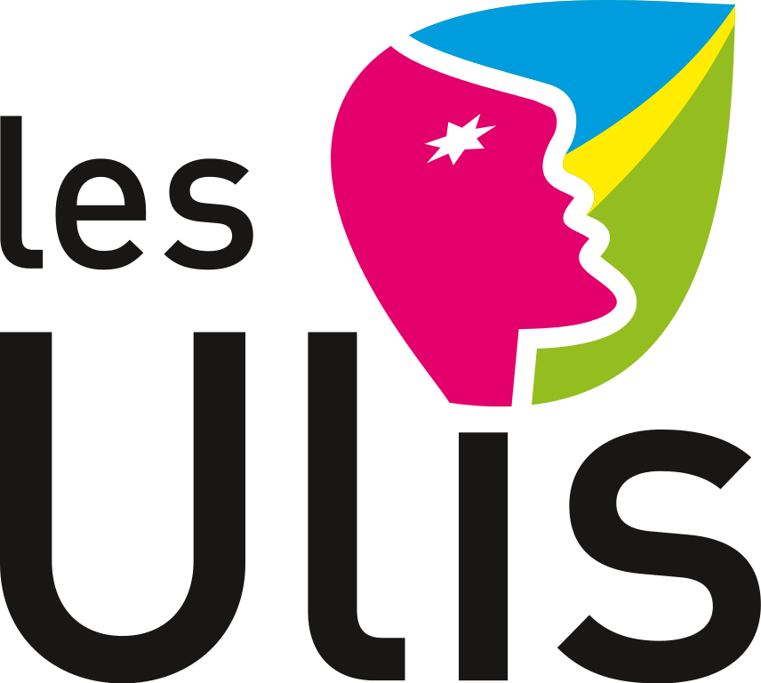

Rejoignez le club dès maintenant
TEAM DEMO
Association Loi 1901 sous convention avec le service des sports 
Reprise des activités 2016-17 : Tous les samedi (à partir du 17 septembre 2016) de 17h30 à 20h00 au dojo des Bathes , "CHOREGRAPHIES MARTIALES - CASCADES"Tous les lundi (à partir du 12 septembre 2016) de 16h30 à 18h00 au dojo des Bathes,"CHOREGRAPHIES MARTIALES"
Et en collaboration avec la team CASCADES COMBATS CINEMA (CCC) de l'ASESCO :
TRICKS : lundi de 19h30 à 20h30 au dojo du bât.225 de la fac d'Orsay
PARKOUR : mercredi de 19h30 à 21h30 en salle C du bât.225 de la fac d'Orsay
COMBAT CINEMA : mardi de 19h30 à 20h30 au dojo du bât.225 de la fac d'Orsay
2 cours d'essais gratuits, au dojo des Bathes et/ou à la Fac d'Orsay !
Notre activité s'articule autour des “Combats & Cascades de Cinéma”, dans un contexte purement loisir et amateur.
Nous sommes une communauté de passionnés de disciplines sportives, artistiques et culturelles.
Cela recouvre les arts martiaux scéniques, les combats chorégraphiques, les acrobaties martiales ou l'art du déplacement ("tricks" et "parkour" avec le CCC Fac d'Orsay Philippe MARTY), la comédie, les techniques audio-visuelles, etc.
Nous regroupons aussi bien des “amateurs du dimanche” que des personnes en relation avec le milieu professionnel, afin de mettre en commun la plus grande diversité de compétences.
Nous tâchons d'entretenir et transmettre cette passion et ces compétences lors des entraînements hebdomadaires, et d'éventuels stages ponctuels complémentaires,ainsi que de valoriser cette expérience par des spectacles amateurs (démonstrations, courts métrages ...).
Nous souhaitons également travailler en complémentarité avec les clubs d'arts martiaux traditionnels :
Si notre association peut en outre servir de tremplin à quelques chanceux (qui s'y seront fait remarqués), ce sera une belle “cerise sur le gâteau” dont l'association pourra s'enorgueillir, mais en aucun cas garantir.
Artistes martiaux, chorégraphes, gymnastes et acrobates, comédiens, scénaristes, vidéastes : venez-nous rejoindre !